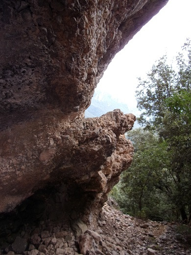
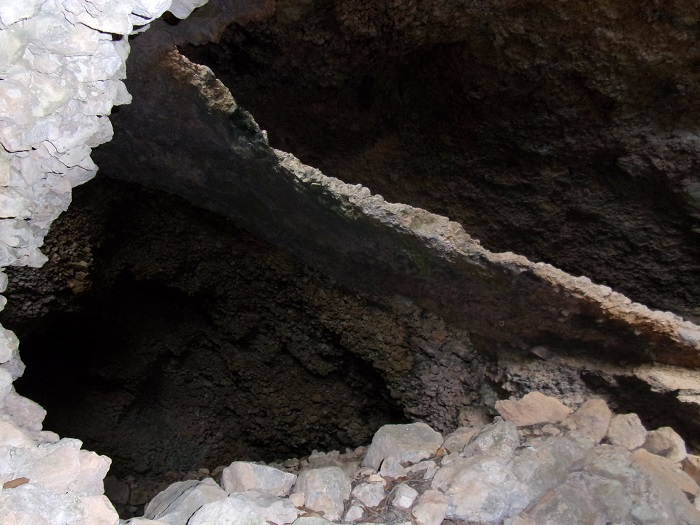
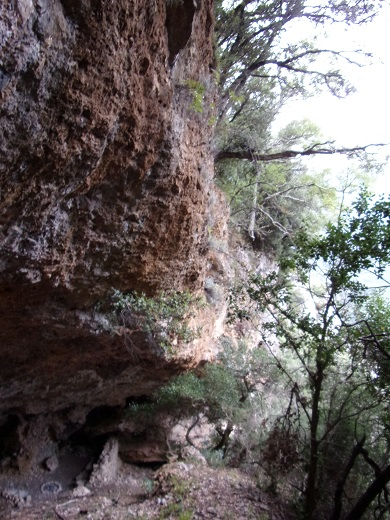

Ce quelques photos en parleront mieux que moi...

La grotte de planèses, Voici ce que sur quoi nous allons devoir descendre...

planèses, le pont naturel
de la difficulté de la descente

Planèses, le pont naturel à contre jour
La pente du pont est respectée ...(presque)
L'entrée depuis le plateau est toute en haut

Planèses, le pont naturel vue de dessous
Et voilà sur quoi nous sommes passés...

planèses, le pont naturel vu depuis une bergerie
en haut l'entrée des moutons


Planèses, le pont naturel pris depuis l'ouverture sur le précipice
Planèses, extrémité basse du pont naturel pris de dessous
Planèses, pont naturel pris depuis l'excavation

Planèses, pont naturel pris de dessus
Planèses, les arbres horizontaux
Planèses, le pont naturel, reconstitution par Laurence de l'usage du pont

planèses, une des 5 bergeries de la grotte
en haut l'entrée des moutons

planèses, petite arche et mur de bergerie
Mais je ne peux pas m'empêcher de raconter...
Les habitants du village avaient appelé "pont de cristal" cet ouvrage de la nature à cause de sa finesse et de son apparente fragilité.
Quand ma mère m'a fait découvrir le site, elle y revenait pour la première fois depuis une trentaine d'année. Je devais avoir plus de dix ans déjà, sûrement intéressé par le passé de notre famille qu'elle essayait de nous transmettre. D'abord désorientée au bout du plateau, "mais où est elle ?, mais ou est elle ?" et par hasard derrière les restes de ce 'muret' de pierre "Ah, c'est là, venez !". Comme la grotte se mérite je ne vous en dirais pas plus sur sa position...
"Là quoi? Tu veux nous faire descendre tout en bas ? C'est dangereux ? Mais pourquoi ?
- Quand je pense que la première fois que pépé m'y a amenée j'étais si déçue, il m'avait tant parlé de ce pont comme d'une merveille et là ce n'était que quelques cailloux dans une grotte au fin fond de la montagne, tant d'effort pour y aller pour voir 'ça'. Maintenant je regrette... Pense à tous ces moutons qui ont monté puis descendu tous les jours de leur vie sans se plaindre"
Assis sur le derrière, les pieds en avant, plus glissant que marchant sur ces pierres usées, rabotées par le passage quotidien pendant des siècles de tous ces animaux, nous avons réussi à parcourir les 15 mètres nous séparant du sol de la cavité.
Alors fière ma mère s'est retournée : "Regarde sur quoi tu as marché...". Ce n'est qu'alors que je me suis aperçu que j'avais longé un petit précipice et que j'avais été sur un lit de pierre de moins de 30 centimètres d'épaisseur sur environ trois mètres.
En largeur le pont ne doit pas faire plus d'un mètre cinquante en son point le plus étroit, mais jusqu'à ce jour il a résisté au temps et à son usage (je touche ma tête de bois).
Dans cet espace couvert se sont tenues 5 bergeries, transmises de père en fils et mon arrière-grand-père a dû occuper la dernière avant de choisir de construire sa propre bâtisse à la frontière des 4 chemins, à l'entrée du plateau.
Si a chaque fois que nous avons des invités à St Martin, nous leur faisons visiter notre merveille, l'accès à la grotte est resté, jusqu'à y a peu, assez confidentiel.
Mais en 2019, quand j'y suis monté, j'ai constaté qu'une colonie de vacances s'était accaparé l'endroit et avait laissé de nombreuses torches de cire et des bougies réparties presque dans toute la grotte pour pratiquer des cérémonies de nuit, en plus d'avoir installé sa "sculpture moderne" au point de vue. Même s'ils ont nettoyé depuis (j'espère), j'en ai eu mal pour mon arrière-grand-père qui avait su préserver la sauvagerie du lieu.
Cet été 2020, j'y suis remonté pour prendre quelques nouvelles photos (voir plus haut), même si le désordre ambiant était nettement moindre que l'année passée, il reste encore quelques torches non encore brûlées :
et quelques nouveaux rond de feu (comme on peut le voir sur la première photo)
Ce lieu est fragile, le pont ne sera peut être pas éternel, il serait dommage par notre attitude de dégrader ce site qui mérite notre visite.